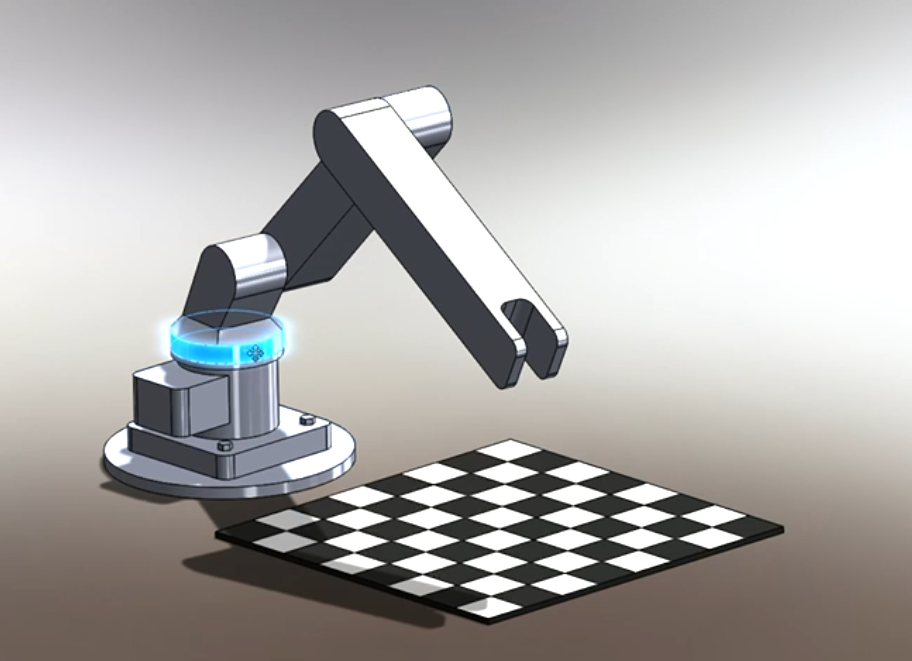

Design Evolution
Preliminary Design

This preliminary design was drafted in Solidworks. Its main purpose was to get us a rough idea of the size and functionality of the arms components. By creating a checkers board within Solidworks I was able to correctly scale the arm to accomidate. At this stage the concept for the gripper design was still being decided upon.